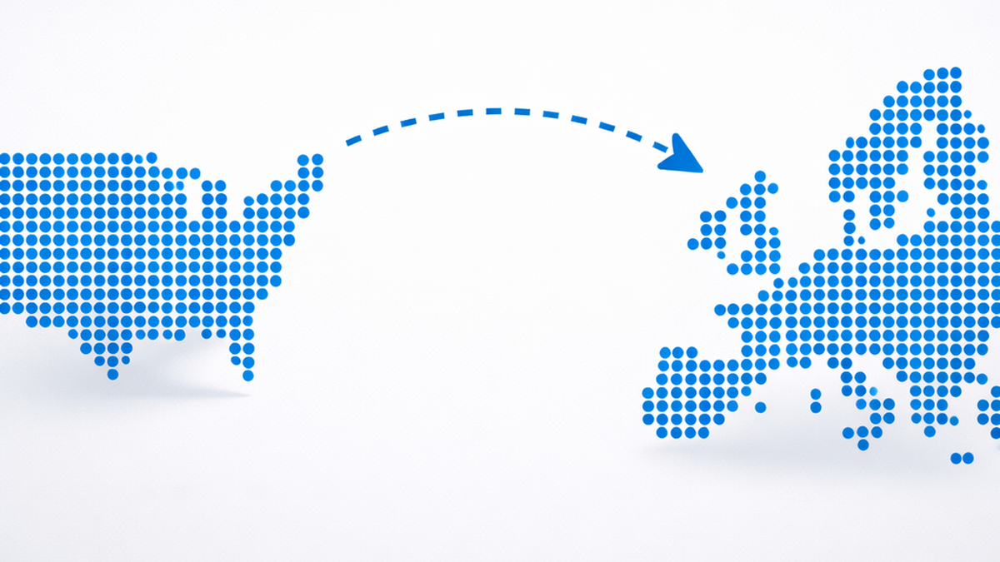

Insights
Was souveräne KI in der Praxis bedeutet.
Notizen zur Rechtslage, zu offenen Modellen und zu Fällen, in denen digitale Abhängigkeit konkret wurde. Kurz gehalten und mit Quellen belegt.

Open-Source-Modelle sind konkurrenzfähig
Qwen 3.5 und Nemotron 3 Super zeigen: Open-Source-Modelle konkurrieren mit proprietären Anbietern. Beide laufen auf eigener Infrastruktur, ohne API-Abhängigkeit.

KI unter US-Jurisdiktion
Der CLOUD Act erlaubt US-Behörden den Zugriff auf Daten in der Schweiz. Der Remote Access Security Act könnte bald auch Cloud-KI regulieren.

Souveränität in der Praxis
Der ICC verliert den Zugang zu Microsoft-Diensten, das EU-Parlament deaktiviert KI auf allen Geräten. Zwei Fälle, die zeigen: digitale Souveränität ist nicht theoretisch.